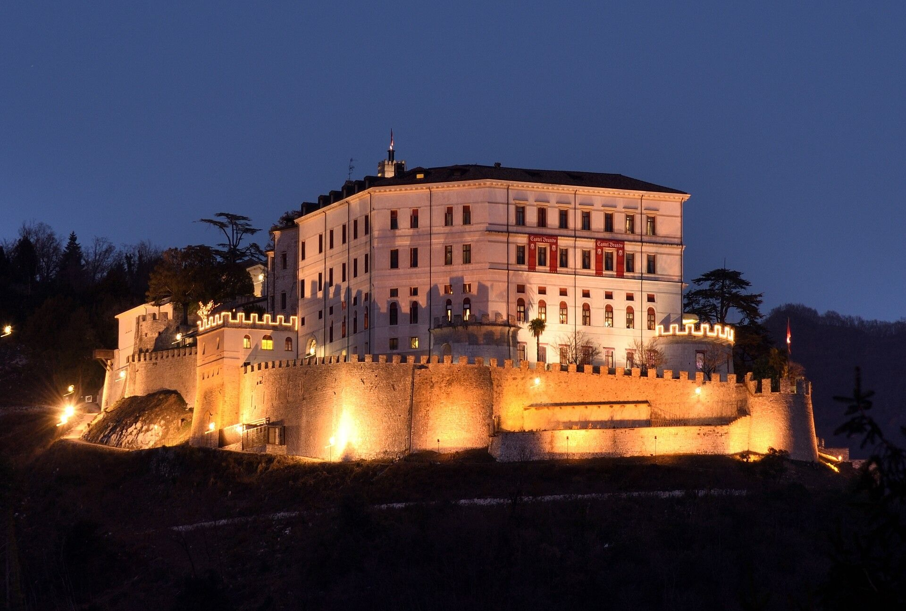
Cison di Valmarino · Colline del Prosecco
Una casa intera nel cuore del borgo, con il castello che si illumina sopra i tetti
Settantaquattro metri quadri, un giardino privato con gazebo e il parcheggio accanto alla porta. Le cantine sono a pochi minuti, le osterie si raggiungono a piedi.
La vendemmia a settembre, i vigneti oro e rame in autunno, le luci di Stelle a Natale a dicembre, i sentieri in primavera. Scriveteci le vostre date: rispondiamo noi, senza intermediari.
Chiedi su WhatsApp →Distanze
Perché BaBi
Il punto di partenza per le degustazioni e le passeggiate fra i vigneti del Prosecco Superiore.
Si cena nelle osterie del paese e si torna a casa a piedi. L'auto resta nel parcheggio privato accanto alla porta.
74 mq tutti per voi, con il giardino privato, il gazebo e il castello che si vede dalle finestre.
All'arrivo vi mostra la casa e vi lascia i suoi consigli su cantine e osterie. Durante il soggiorno basta un messaggio.
L'appartamento
Pavimenti in legno, mobili di famiglia, poltrone rosse e stampe antiche alle pareti. BaBi è una casa vera, tenuta con cura.
In camera c'è il letto matrimoniale, in soggiorno due letti singoli. Poi la cucina con la zona pranzo e il bagno.
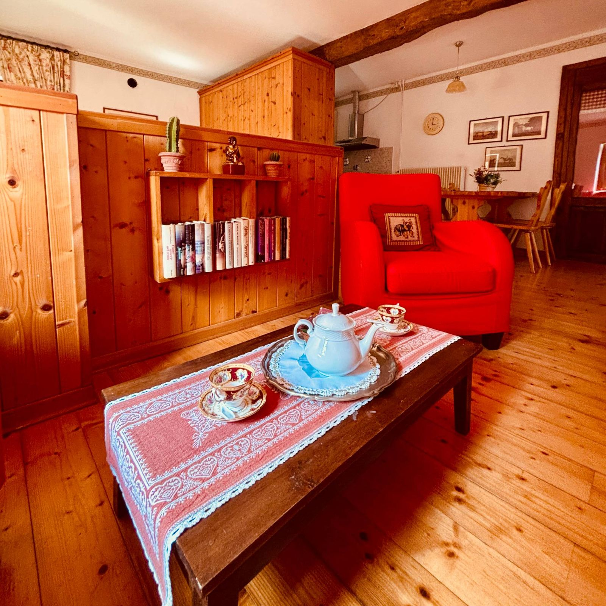
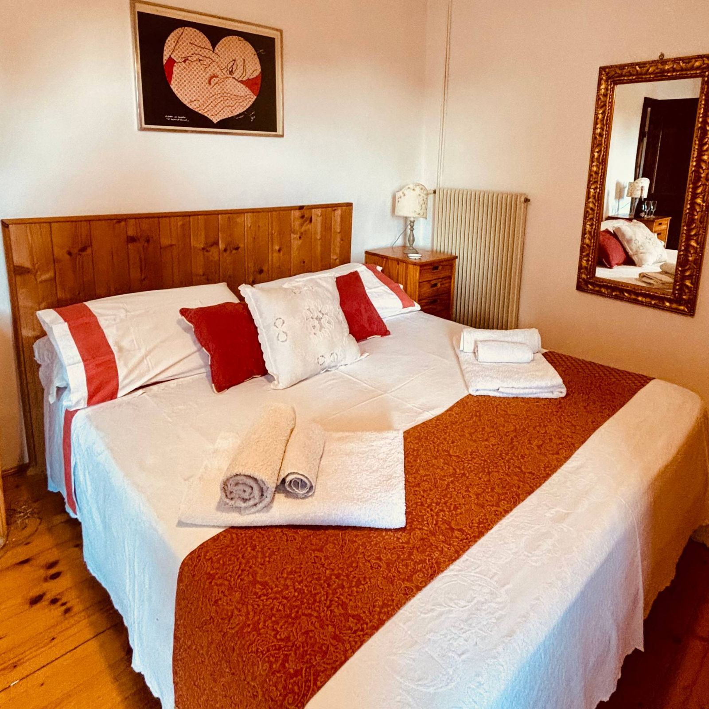
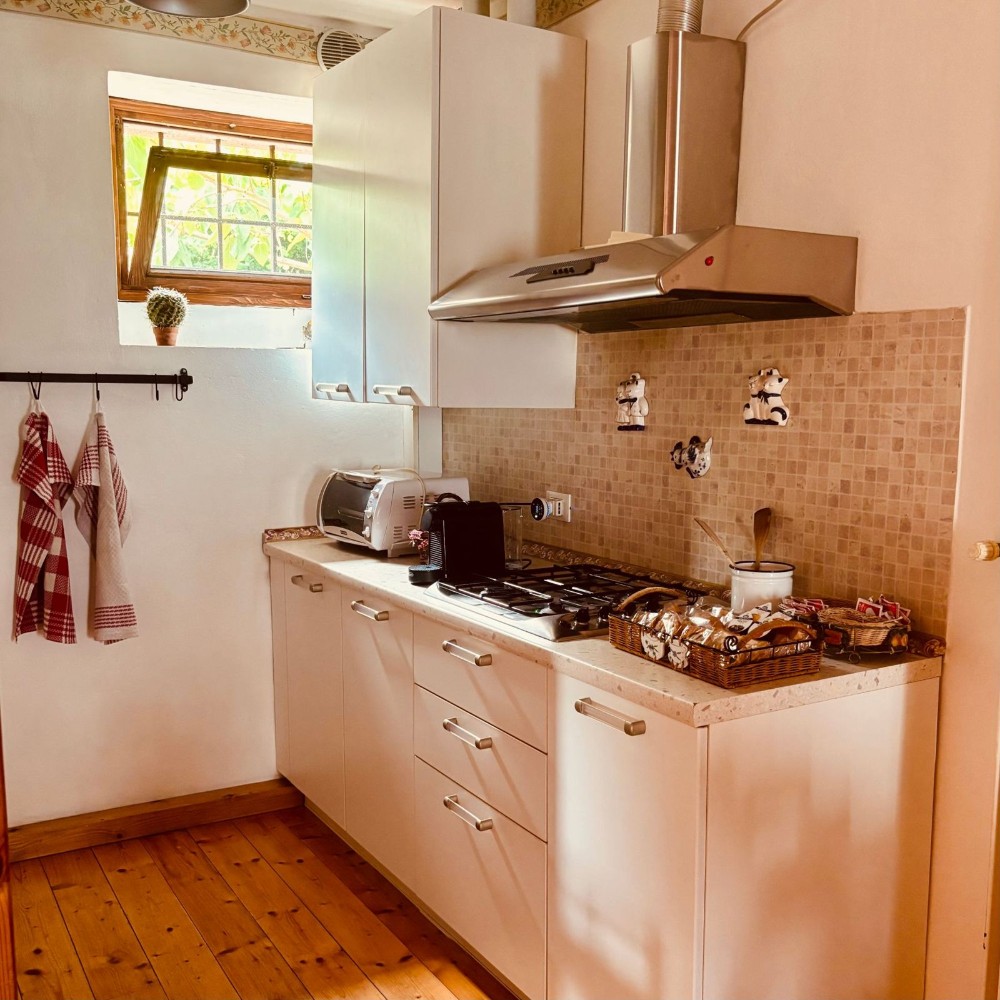
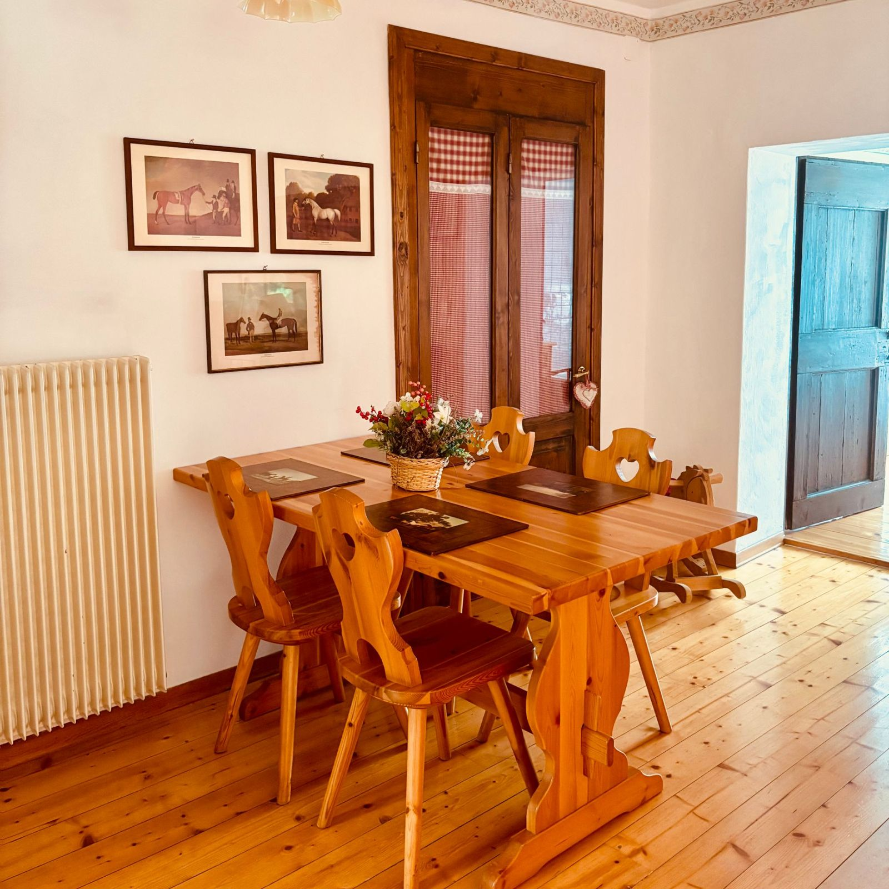
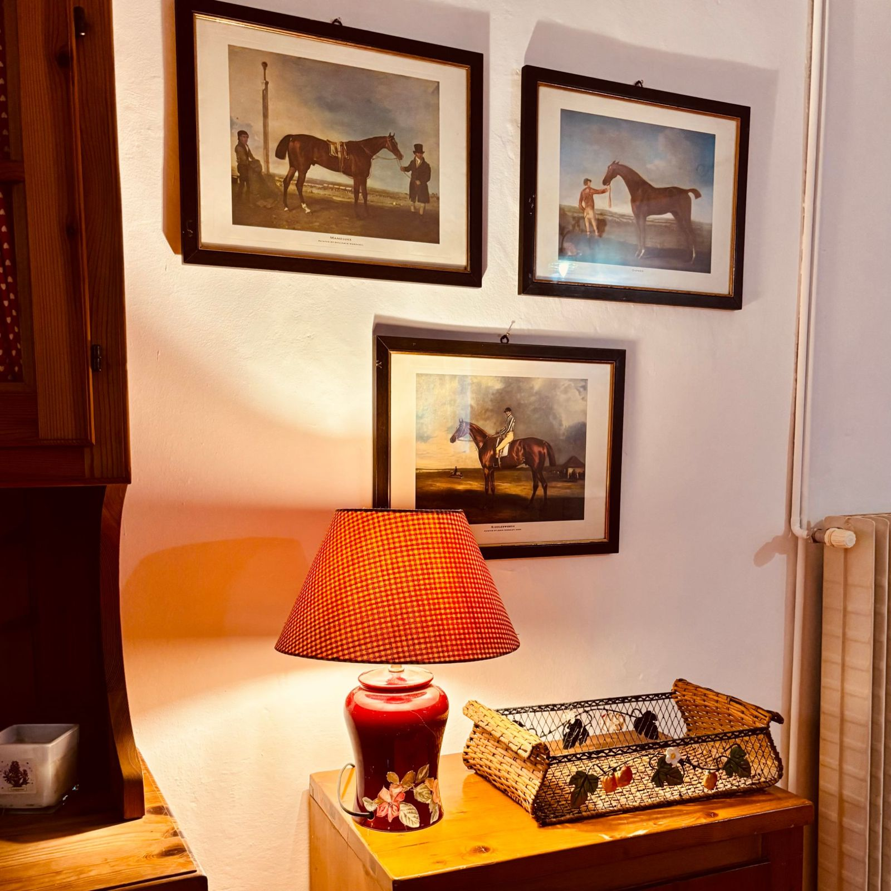
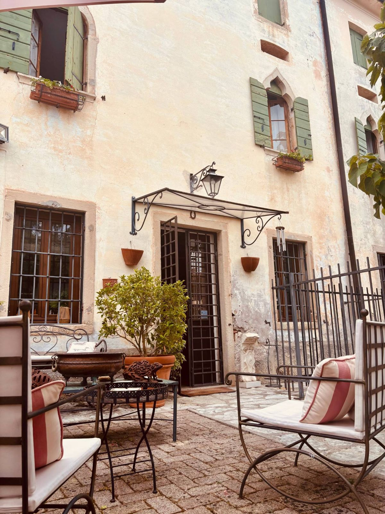
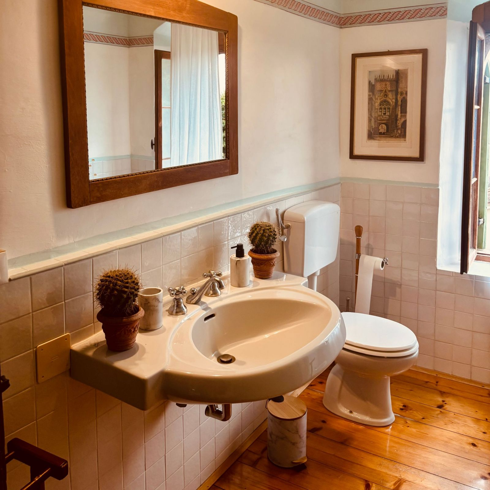
Dotazioni
Preferiamo dirlo qui, piuttosto che farvelo scoprire all'arrivo.
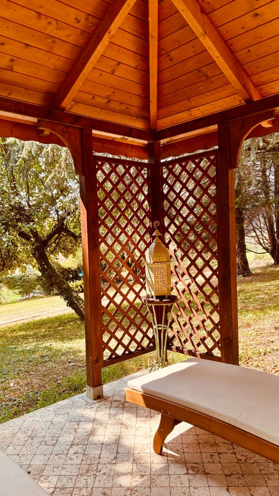
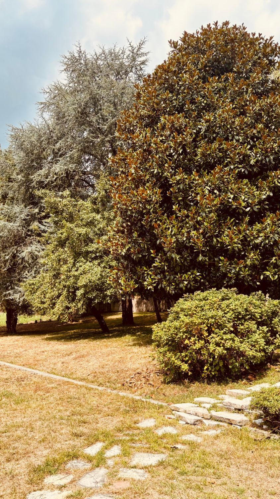
Il giardino
Il giardino è privato, riservato a chi soggiorna da BaBi. Sotto il gazebo di legno ci sono i lettini e una lanterna; tutto intorno il prato, un sentiero di pietre, una grande magnolia e un cedro che fanno ombra.
La sera si finisce lì, con un bicchiere di Prosecco.
Cosa fare nei dintorni
Cison è uno dei Borghi più belli d'Italia, nelle Colline del Prosecco riconosciute patrimonio UNESCO. Un paese piccolo e silenzioso, con una piazza, una loggia del Quattrocento e un castello.
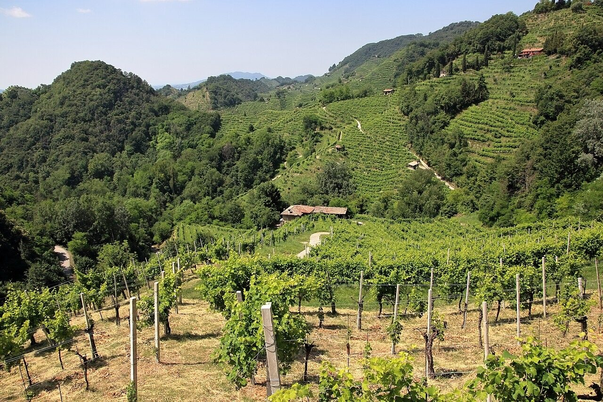
La frazione più bella del comune, poche case in mezzo ai vigneti. Qui e nei dintorni si visitano le cantine del Prosecco.
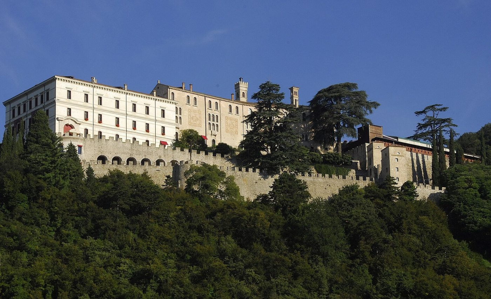
Il castello che vedete dalla casa: mura medievali, armature, le vecchie prigioni e la chiesa di San Martino.
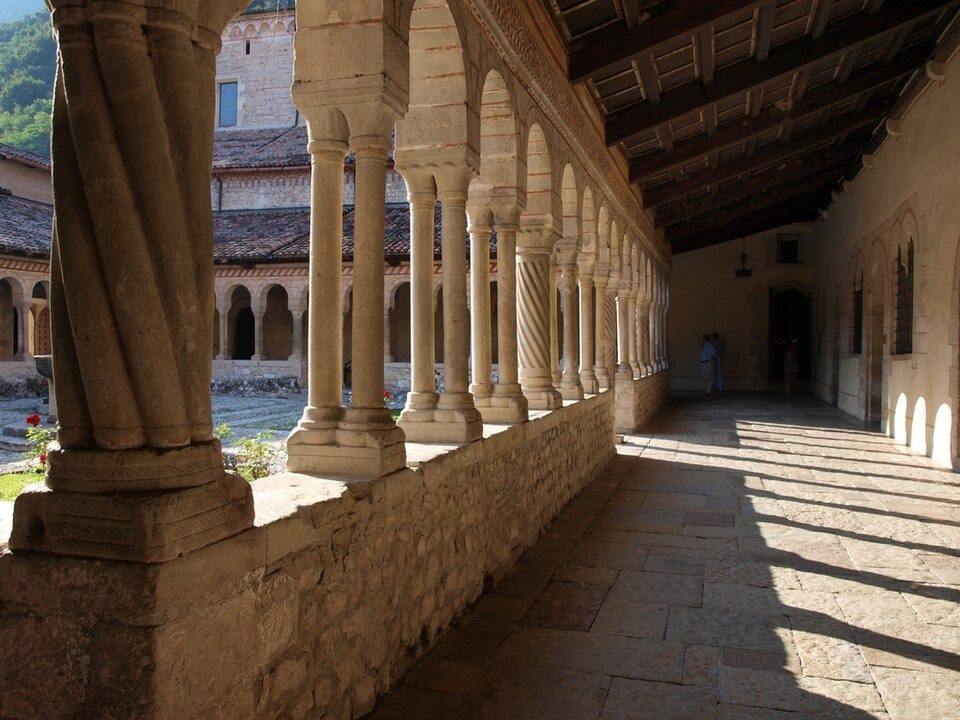
Abbazia cistercense del Duecento, con un chiostro del Trecento tenuto benissimo.
Dicono di noi
“Appartamento molto confortevole in un edificio dove ogni angolo respira storia. Una delizia particolare sono i piccoli pensieri: la bottiglia di spumante, la marmellata e i biscotti, e un angolo accogliente per il vostro cane. Torneremo di sicuro, e più di una volta.”
Recensione su Booking · novembre 2026
Informazioni pratiche
| Check-in | Dalle 15:00. Vi accoglie Maria Barbara di persona e vi consegna le chiavi. |
|---|---|
| Check-out | Entro le 11:00. |
| Documenti | Un documento d'identità per ogni ospite, minori compresi: è un obbligo di legge e lo registriamo entro 24 ore dall'arrivo. |
| Imposta di soggiorno | 1 € a persona per notte, fino a 5 notti. Esenti i minori di 14 anni. In contanti all'arrivo. |
| Animali | Ammessi su richiesta, con un supplemento di 30 € a soggiorno. |
Domande frequenti
È privato, gratuito e proprio accanto alla casa. Non serve cercare posto in paese.
Sì: in camera c'è il letto matrimoniale, in soggiorno due letti singoli, e fuori il giardino privato.
Sì, su richiesta, con un supplemento di 30 € a soggiorno. Ditecelo quando prenotate.
Non c'è l'aria condizionata fissa, ma c'è un climatizzatore portatile. Il giardino con il gazebo resta fresco anche nei pomeriggi d'agosto.
Scriveteci su WhatsApp le vostre date: vi risponde Maria Barbara, senza intermediari. Se preferite, BaBi si trova anche su Booking.com.
Contatti
Scriveteci le date su WhatsApp: vi risponde Maria Barbara.